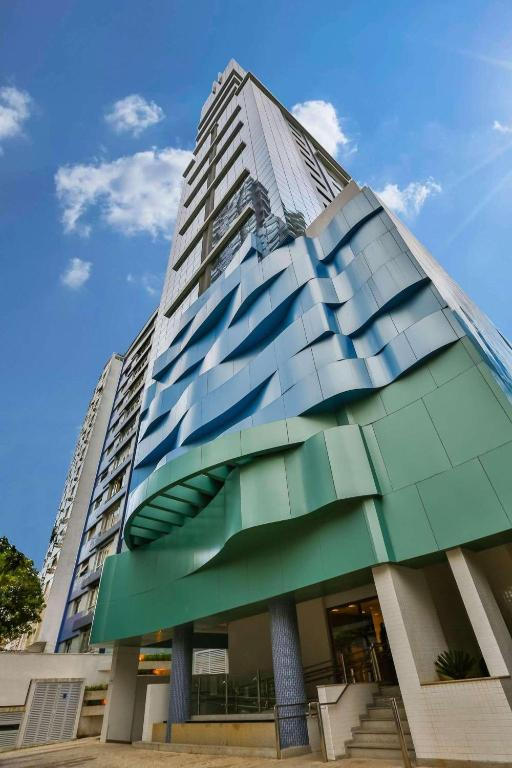
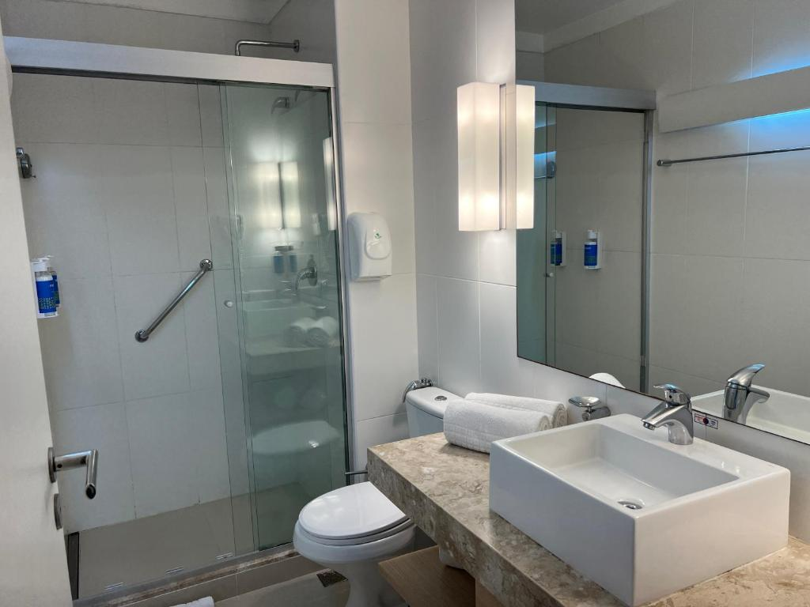

Hotel Acquaville
(Bertioga) - 2,8km do centro / 300 Metros da Praia
* Café da manhã incluído
* Cancelamento grátis
Quarto Triplo
2 camas( 1 solteiro + 1 casal)
2 diárias, 2 adultos R$689,00
*Impostos e taxas incluídas
758 Avaliações 8,1
O Acquaville dispõe de 2 piscinas rodeadas pelo jardim. A propriedade oferece parquinho infantil, café da manhã diário e estacionamento gratuito. A Praia da Enseada, em Bertioga, fica a 2 quarteirões de distância. Os quartos práticos desta pousada apresentam um ambiente bem iluminado. Todos dispõem de TV LCD, frigobar e banheiro privativo com chuveiro. Alguns oferecem acesso à varanda térrea.


Pousada Hostel Brazil Backpackers
(Guaruja) - 2,8km do centro / 550 Metros da Praia
* Cancelamento grátis
Quarto duplo
1 camas(1 casal)
2 diárias, 2 adultos R$495,00
*Impostos e taxas incluídas
1058 Avaliações 8,2
Situada a 6 km da Estação Rodoviária do Guarujá, a Pousada Hostel Brazil Backpackers, no Guarujá, oferece diversas comodidades, incluindo piscina ao ar livre, churrasqueira e jardim. Localizado a cerca de 650 metros da Praia da Enseada, o albergue também fica a 2,4 km do Aquário Acqua Mundo. A acomodação dispõe de cozinha compartilhada e Wi-Fi gratuito.


Pousada Baobá
(Juquehy) - 1,8km do centro / 400 Metros da Praia
* Café da manhã incluído
* Não requer pré-pagamento – pague na acomodação
Quarto Quaduplo
3 camas( 2 solteiro + 1 casal)
2 diárias, 2 adultos R$1052,00
*Impostos e taxas incluídas
2058 Avaliações 8,8
Situada em Juqueí, a 800 metros da Praia de Juqueí, a Pousada Baobá oferece acomodações com piscina ao ar livre, estacionamento privativo gratuito, jardim e lounge compartilhado. Com um bar, a propriedade fica a 2,9 km da Barra do Sahy. Alguns quartos possuem varanda com vista da piscina. Todos os quartos da pousada incluem mesa de trabalho. Os quartos da Pousada Baobá são completos com banheiro privativo com chuveiro, TV de tela plana e ar-condicionado, e alguns quartos incluem terraço. Além disso, as acomodações incluem roupa de cama e toalhas.


Mandala Maresias
(Maresias) - 300 Metros da Praia
* Cancelamento grátis
Quarto Duplo
2 camas( 1 solteiro + 1 casal)
2 diárias, 2 adultos R$720,00
*Impostos e taxas incluídas
580 Avaliações 8,4
O Mandala Maresias oferece piscina, área de churrasqueira e Wi-Fi gratuito a apenas 350 metros da Praia de Maresias. Também dispõe de uma varanda térrea de uso comum com redes e mesa de bilhar. Os quartos apresentam decoração elegante em estilo rústico e ar-condicionado. Incluem TV de tela plana, frigobar e banheiro privativo com chuveiro de água quente. O buffet de café da manhã diário inclui frutas frescas, pães, frios e uma seleção de bebidas quentes e geladas.


Pousada Tambayba
(Maresias) - 2,8km do centro / 150 Metros da Praia
* Café da manhã incluído
* Cancelamento grátis
Quarto Master
2 diárias, 2 adultos R$1327,00
*Impostos e taxas incluídas
5058 Avaliações 8,8
Localizada em Maresias, a 200 metros da Praia de Maresias, a Pousada Tambayba dispõe de piscina ao ar livre, estacionamento privativo grátis, lounge compartilhado e jardim. Com uma churrasqueira, a propriedade fica perto de atrações como a Praça Internacional do Surfe. Você ainda pode usufruir de playground e Wi-Fi grátis.
Sea Pearl
(Praia Branca) - 600 Metros da Praia
* Cancelamento grátis
Quarto Duplo
2 camas( 1 solteiro + 1 casal)
2 diárias, 2 adultos R$771,00
*Impostos e taxas incluídas
978 Avaliações 8,0
O Sea Pearl - Praia Branca dispõe de varanda e está localizado na Praia da Areia Branca, a menos de 1 km da Praia. A propriedade fica a 27 km do Castelo de Óbidos, a 3,6 km do Museu da Lourinhã e a 15 km da Fortaleza de Peniche. O WiFi gratuito está disponível em toda a propriedade e a Praia da Areia Branca fica a 700 m de distância.


Riviera de São Lourenço Flat
(Riviera de São Lourenço) - 5,8km do centro / 1100 Metros da Praia
Quarto Duplo
2 camas( 1 solteiro + 1 casal)
2 diárias, 2 adultos R$649,00
*Impostos e taxas incluídas
344 Avaliações 8,3
2 camas( 1 solteiro + 1 casal)
2 diárias, 2 adultos R$649,00
*Impostos e taxas incluídas
344 Avaliações 8,3
Localizado na Riviera de São Lourenço, no estado de São Paulo, próximo à Riviera de São Lourenço, o Riviera de São Lourenço Flat oferece acomodações com estacionamento privativo gratuito e acesso a uma sauna. A propriedade oferece restaurante, recepção 24 horas, serviço de transfer gratuito e Wi-Fi gratuito em todas as áreas. O apartamento dispõe de piscina ao ar livre com bar, bem como sauna a vapor e segurança durante todo o dia.




Roomo Santos Residencial
(Santos) - 1km do centro / pé na areia
* Cancelamento grátis
Apartamento superior
2 camas( 2 solteiro )
2 diárias, 2 adultos R$432,00
*Impostos e taxas incluídas
458 Avaliações 8,2
Bem localizado a poucos quarteirões da praia e a 9 minutos a pé do Miramar Shopping, o Roomo Santos Residencial oferece piscina ao ar livre e academia equipada. A propriedade também fornece Wi-Fi grátis em todas as áreas e um estacionamento particular por um custo adicional.


Ilha Porchat Hotel
(São Vicente) - 2,4km do centro / 200 Metros da Praia
* Café da manhã incluído
* Cancelamento grátis
Quarto Duplo
2 camas( 1 solteiro + 1 casal)
2 diárias, 2 adultos R$988,00
*Impostos e taxas incluídas
987 Avaliações 8,1
Localizado a apenas 9 minutos a pé da praia, o Ilha Porchat Hotel oferece piscina, restaurante, buffet de café da manhã e Wi-Fi. O hotel fica a 650 metros do Observatório de São Vicente e a 1 km do Teleférico de São Vicente.


Pousada Recanto das Palmeiras
(Ubatuba) - 1,8km do centro / 200 Metros da Praia
* Café da manhã incluído
* Cancelamento grátis
Quarto Duplo
2 camas( 1 solteiro + 1 casal)
2 diárias, 2 adultos R$720,00
*Impostos e taxas incluídas
158 Avaliações 8,2
Situada a apenas 5 minutos a pé da Praia de Ubatuba, a Pousada Recanto das Palmeiras dispõe de piscina, Wi-Fi gratuito e buffet de café da manhã. A acomodação fica a 2 km do centro de Ubatuba, que abriga diversos restaurantes.
Instagram:
#Globalhotels
#Globalhotels
Contato e Whatsapp:
(11)99876-5432
(11)99876-5432
Email:
globalhotels @gmail.com
globalhotels @gmail.com